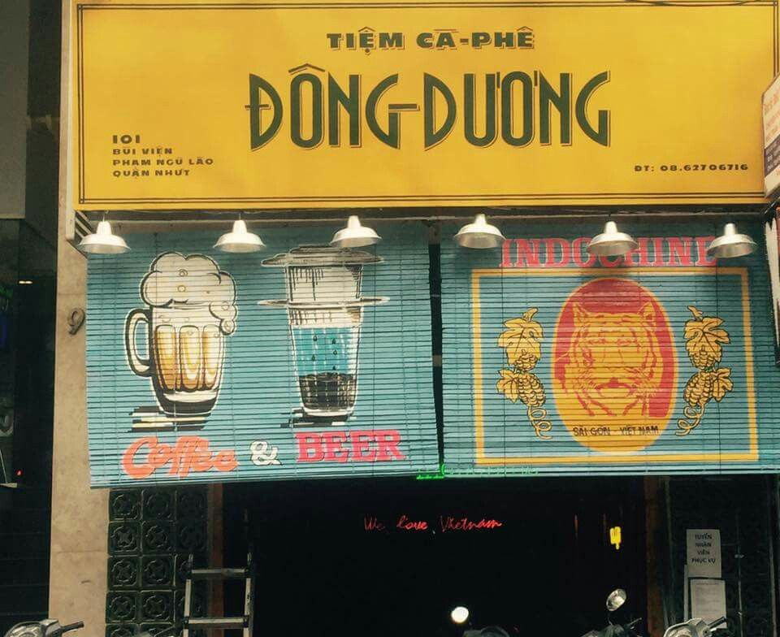

Mành sáo trúc thường được làm từ những cây sáo trúc tươi mới, chất liệu tự nhiên và dễ dàng chế tác. Các nghệ nhân sẽ chọn cây sáo trúc có đường kính và chiều dài phù hợ. Sau đó xử lý và uốn nắn chúng thành các hình dạng khác nhau. Những cây sáo trúc này sau đó được gắn chặt vào nhau để tạo thành một mành lớn, thường có kích thước từ vài mét đến hàng chục mét.
1. Mành sáo trúc trong không gian quán cà phê
Mành sáo trúc được sử dụng trong trang trí, đặc biệt với không gian quán cà phê. Việc lựa chọn mành có màu sắc và kiểu dáng phù hợp với không gian quán cà phê của bạn. Điều này giúp cho không gian trở nên hài hòa và tinh tế. Bạn có thể sử dụng mành với các gam màu tự nhiên như nâu, màu gỗ hoặc màu xanh lá cây để tạo sự gần gũi và gợi nhớ đến thiên nhiên.
Màn sáo trúc cũng được sử dụng để tạo ra các màn chắn ngăn cách các khu vực trong quán cà phê. Điều này tạo nên một khu vực riêng biệt bằng cách treo mành giữa các bàn để tạo sự riêng tư cho khách hàng.
Bạn cũng có thể trang trí tường bằng mành sáo trúc. Thông qua việc treo mành dọc theo tường hoặc cắt thành các mảnh nhỏ để tạo hình ảnh hoặc mẫu trang trí độc đáo. Ngoài ra, bạn còn có thể thay thế rèm cửa thông thường bằng loại mành này để tạo không gian tự nhiên và thư giãn hơn. Và cho phép ánh sáng tự nhiên xuyên qua và tạo ra hiệu ứng ánh sáng đẹp. Hơn nữa, để tăng thêm sự gần gũi với thiên nhiên, hãy kết hợp mành với cây xanh. Bạn có thể đặt cây xanh trong chậu bên cạnh chiếc mành.
2. Bảo quản mành sáo trúc như thế nào?
Để sử dụng mành sáo trúc được lâu dài theo thời gian, bạn cần bảo quản chúng kỹ càng, đúng cách, vì ánh nắng mặt trời có thể làm mành bị phai màu thậm chí là bay mất màu. Nên tránh để chúng tiếp xúc trực tiếp với ánh nắng mặt trời. Loại mành này dễ bị mục nát nếu tiếp xúc với độ ẩm cao. Do đó, cần đặt mành sáo trúc ở nơi khô ráo và thông thoáng. Tránh đặt gần các nguồn nước hoặc vị trí có độ ẩm cao như phòng tắm. Người dùng nên tránh sử dụng các chất tẩy rửa mạnh hoặc chất phụ gia có thể gây hại cho sáo trúc. Nếu cần làm sạch, hãy sử dụng một cái khăn mềm và nhẹ ướt để lau nhẹ nhàng. Và để tránh vi khuẩn và mùi khó chịu, hãy đặt mành ở nơi có lưu thông không khí tốt.

Ngoài ra, cần có việc định kỳ lau mành để loại bỏ bụi bẩn. Có thể sử dụng một cái hút bụi nhẹ hoặc chổi mềm để làm sạch mành. Tránh chà xát mạnh mẽ để tránh gây hỏng hoặc rách mành. Nếu bạn không sử dụng mành trong một thời gian dài, hãy lưu trữ nó ở nơi khô ráo, không có ánh sáng mặt trời và không có côn trùng. Bạn có thể sử dụng hộp chứa đựng hoặc túi bảo quản để bảo vệ khỏi bụi bẩn và các tác nhân gây hại khác.
3. Địa chỉ cung cấp mành sáo trúc uy tín, chất lượng
Công ty TNHH Tre Việt Building là địa điểm cung cấp mành sáo trúc uy tín dành cho bạn. Tất cả các sản phẩm của chúng tôi được chế tác từ nguyên liệu tự nhiên chất lượng cao. Đảm bảo mang lại sự sang trọng và tự nhiên cho không gian trang trí. Chúng tôi cam kết về độ bền, độ tinh tế và tính thẩm mỹ của mỗi sản phẩm. Tre Việt Building tự tin khi là đối tác của nhiều khách hàng trong việc trang trí nhiều loại không gian, bao gồm không gian nội thất, quán cà phê, nhà hàng, khách sạn và nhiều hơn nữa. Hơn nữa, chúng tôi cam kết về giá cả cạnh tranh, chất lượng sản phẩm và dịch vụ hậu mãi tốt và luôn đặt lợi ích của khách hàng lên hàng đầu, sẵn lòng đáp ứng mọi yêu cầu của quý khách. Hãy liên hệ với Tre Việt Building ngay hôm nay để có được một không gian trang trí ấn tượng và độc đáo.
Tre Việt Building – Cùng Thiên Nhiên kiến tạo cuộc sống hạnh phúc
Thông tin liên hệ:
CÔNG TY TRÁCH NHIỆM HỮU HẠN TRE VIỆT
BUILDING
Địa chỉ: 917 Phạm Văn Đồng, Phường Linh Xuân, Thành phố
Hồ Chí Minh
Nhà máy sản xuất: Phú Hợp B, Xã Phú Lâm, Đồng Nai.
Website: tretruc.com.vn
Điện thoại – Zalo: 093.123.5757
Email: info@treviet.com.vn – treviet23@gmail.com